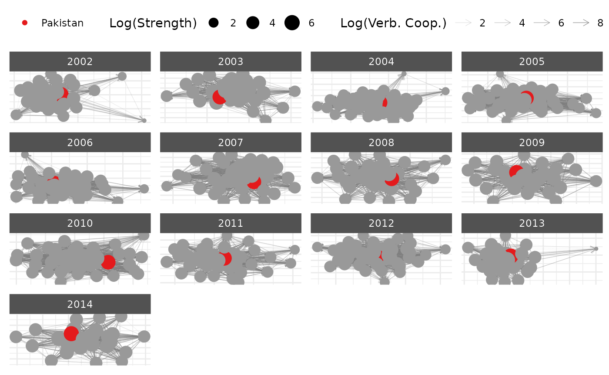

Ego Networks
Cassy Dorff and Shahryar Minhas
2025-06-15
Source:vignettes/ego_networks.Rmd
ego_networks.RmdThis vignette provides an overview of how to create ego networks
using netify. Generally, ego networks are a kind of network
that focuses on the network that surrounds a single individual actor
within a larger network. These networks include information about the
ego (central node or individual under study), the alters (nodes
connected to the ego), and ties (relationships or connections between
ego and alters and among alters).
Let’s load the necessary libraries.
First, we can create a netlet object from some dyadic
data (ICEWS data) using the netify package.
# load icews data
data(icews)
# choose attributes
nvars = c( 'i_polity2', 'i_log_gdp', 'i_log_pop' )
dvars = c( 'matlCoop', 'verbConf', 'matlConf' )
# create a netify object
netlet = netify(
icews,
actor1='i', actor2='j',
time = 'year',
symmetric=FALSE, weight='verbCoop',
mode='unipartite', sum_dyads=FALSE,
actor_time_uniform=TRUE, actor_pds=NULL,
diag_to_NA=TRUE, missing_to_zero=TRUE,
nodal_vars = nvars,
dyad_vars = dvars
)
# print
netlet
#> ✔ Hello, you have created network data, yay!
#> • Unipartite
#> • Asymmetric
#> • Weights from `verbCoop`
#> • Longitudinal: 13 Periods
#> • # Unique Actors: 152
#> Network Summary Statistics (averaged across time):
#> dens miss mean recip trans
#> verbCoop 0.415 0 19.114 0.976 0.627
#> • Nodal Features: i_polity2, i_log_gdp, i_log_pop
#> • Dyad Features: matlCoop, verbConf, matlConfThis is a longitudinal, weighted network with nodal and dyadic attributes. In a few more steps we will show how to highlight these attributes in a plot.
Let’s say we want to extract the ego network specifically for
Pakistan. We can do this using the ego_netify function.
This function has the following arguments:
-
netlet: A ‘netify’ object, which contains the network data structured for analysis and visualization. -
ego: A character vector specifying the name(s) of the ego(s) for whom to create the ego networks. -
threshold: A numeric value or vector specifying the threshold for including alters in the ego network. The threshold is used to define the neighborhood of the ego in weighted networks. If a vector is provided, its length should correspond to the number of time points, allowing for a different threshold to be applied for each time period. For unweighted networks, the default is 0. For weighted networks, the default is the average edge weight. This default ensures that we include alters that have an edge weight greater than the average. -
ngbd_direction: For directed networks, users can specify the type of relationship that the ego should have with alters to be considered neighbors. Options are ‘out’ (alters the ego has an outgoing tie with), ‘in’ (alters with an incoming tie to the ego), or ‘any’ (any tie). The default is ‘any’. -
include_ego: Logical; if TRUE, the ego node will be included in the ego network. Default is TRUE.
Using these arguments, let’s extract the ego network for Pakistan, keeping the default threshold.
# extract ego network for Pakistan
pakistan_ego_net = ego_netify(netlet, ego = 'Pakistan')
# print
pakistan_ego_net
#> ✔ Hello, you have created network data, yay!
#> • Unipartite
#> • Asymmetric
#> • Weights from `verbCoop`
#> • Longitudinal: 13 Periods
#> • # Unique Actors: 82
#> Network Summary Statistics (averaged across time):
#> dens miss mean recip trans
#> verbCoop 0.842 0 165.009 0.978 0.912
#> • Nodal Features: i_polity2, i_log_gdp, i_log_pop
#> • Dyad Features: matlCoop, verbConf, matlConfThe print output tells us that across the entire time series, we can
see that Pakistan has 81 unique alters. If we wanted to look at a
specific year we can just subset the object by that year (note that
subset_netify does not work with ego networks at this
time):
# subset to a specific year
pakistan_ego_net[[1]]
#> ✔ Hello, you have created network data, yay!
#> • Unipartite
#> • Asymmetric
#> • Weights from `verbCoop`
#> • Cross-Sectional
#> • # Unique Actors: 35
#> Network Summary Statistics:
#> dens miss mean recip trans
#> verbCoop 0.755 0 166.934 0.979 0.849
#> • Nodal Features: None
#> • Dyad Features: NoneNetify will also calculate summary statistics for ego networks. For
example, we can obtain summary statistics for all of Pakistan’s ego
networks across the time series using the netify built-in
summary function:
head(summary(pakistan_ego_net))
#> net num_actors density num_edges prop_edges_missing
#> 1 Pakistan__2002 35 0.7551020 925 0
#> 2 Pakistan__2003 30 0.8788889 791 0
#> 3 Pakistan__2004 51 0.7274125 1892 0
#> 4 Pakistan__2005 49 0.8167430 1961 0
#> 5 Pakistan__2006 41 0.8221297 1382 0
#> 6 Pakistan__2007 42 0.8707483 1536 0
#> mean_edge_weight sd_edge_weight median_edge_weight min_edge_weight
#> 1 166.93445 514.1573 14 0
#> 2 258.17356 660.1221 39 0
#> 3 95.28745 351.0150 9 0
#> 4 113.05315 410.7403 14 0
#> 5 139.35366 490.6335 18 0
#> 6 174.43148 550.6169 25 0
#> max_edge_weight competition_row competition_col sd_of_row_means
#> 1 6003 0.08100030 0.07897426 229.4351
#> 2 5937 0.08397074 0.07807595 323.6456
#> 3 5141 0.06014889 0.05662972 138.3784
#> 4 6561 0.06493042 0.05954332 168.7123
#> 5 7579 0.07655516 0.06874899 206.3296
#> 6 7125 0.06715083 0.06141609 238.1953
#> sd_of_col_means covar_of_row_col_means reciprocity transitivity
#> 1 224.9583 0.9926160 0.9790484 0.8489611
#> 2 304.2249 0.9782197 0.9564141 0.9378381
#> 3 132.2361 0.9885674 0.9734966 0.8351142
#> 4 158.1764 0.9931345 0.9839155 0.8959472
#> 5 190.2663 0.9871813 0.9790556 0.9023721
#> 6 221.8779 0.9907272 0.9765549 0.9267179We can also inspect the ego network via plot.
plot(pakistan_ego_net,
edge_color = 'grey50',
edge_linewidth = .2,
curved_edges = TRUE,
edge_curvature = 1
)